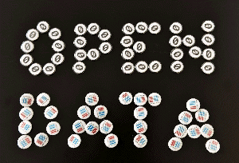
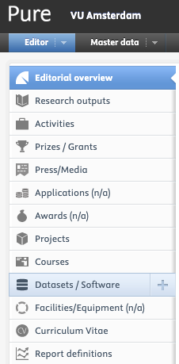

How can you archive and publish your data?
Selecting an Archive
Data archiving: mid- or long-term?
In the Data Management Plan the researcher describes if the data will be stored for the mid or the long term.

Mid-term archive
According to the VU Research Data and Software Management Policy, all publication-related data should be archived for at least ten years for verification and replication of research. For this purpose, VU Amsterdam offers researchers two options to archive their data in one of the organisational repositories (DataverseNL and Yoda). Other archival options may be used depending on the discipline as described in faculty data management policy documents.
Long-term archive
Data relevant for future research should be archived for the long term. A dataset is relevant for future research when at least one of the following general criteria applies:
1. The data have a scientific or historical value 2. The data are unique 3. Others may want to reuse the data 4. The data cannot be reproduced
Researchers should bear in mind that repositories can charge for archiving data. These costs can vary according to the data volume and the archive used. It is important that you consider in advance how you will budget for these costs. Whatever archiving option is used, proper descriptions of the dataset(s) and adding metadata are important.
Deposit your data
VU Amsterdam requests that researchers archive the data used in a publication in a repository for at least ten years after the release of the publication (see also VU Policies & Regulations). There are a lot of digital archives and many more keep appearing.
The right archival option depends on the nature of the data and the field of science as described in faculty or departmental data management policy documents. The university offers 2 different general repositories for data archiving. The RDM Support Desk and faculty data stewards can help researchers with the selection of a repository that meets all the relevant criteria of privacy (sensitivity), dataset size, etc.
- DataverseNL - an online platform for the publication of citable research data in a semi-open environment. DataverseNL allows users to link publications to datasets directly, and to share the data through online archives such as DANS.
Specifications:
- For publishing research data on the internet
- The researcher publishing the data decides whether access to the data is public or restricted
- Not suitable for privacy or otherwise sensitive information
- Enables researchers to publish open data according to grant providers’ regulations
- Generates a link (persistent identifier), e.g. for data citations in publications
- Retention period is at least 10 years
- Yoda - besides active storage, Yoda also has an archive function: the vault. You can use the vault in two ways:
- For archiving data securely; data are only available for verification purposes and may be access only by special request. A special procedure will be followed if anyone requests access to the data in order to verify them.
- For publishing data; data can be available for anyone, or on request. The data will get a persistent identifier as well.
Before sending data to the vault, you will need to add metadata. A data steward, metadata specialist or functional manager can help you with the metadata and the entire process of sending data to the vault. Please get in touch with the RDM Support Desk to find this help.
Choosing a different repository
Besides the repositories offered by VU Amsterdam, there are many others. Unless you are working with personal or otherwise confidential data and you need to archive them in Yoda, you are, in principle, free to choose a different repository from the ones hosted by VU Amsterdam.
There can be various reasons to decide to use a different repository, including funder requirements, preferences of research partners, and a repository being a common choice in your field. For example, Dutch archaeologists mostly use DANS Data Stations to deposit and publish their data. Using a repository that is a common choice in your field will make your data more findable for your colleagues and increase the visibility of your work as a researcher. Some of the data repositories most commonly used in the Netherlands include:
- DANS Data Stations: a collection of four domain-specific repositories hosted by the Data Archiving and Networked Services (DANS), an institute of NWO and KNAW (Koninklijke Nederlandse Akademie van Wetenschappen). They have Data Stations for Social Sciences and Humanities, Archaeology, Life Sciences, and Physical and Technical Sciences. DANS also develops policies, services and new infrastructures for research data and provides researchers with advice on how to preserve their data. VU researchers are also welcome to deposit their data at DANS Data Stations;
- 4TU.ResearchData: a repository for science, engineering and design data hosted by the 4TU Federation. This is a consortium of the four Dutch technical universities: TU Delft, TU Eindhoven, University of Twente and Wageningen University and Research. VU researchers are also welcome to deposit their data at 4TU;
- Zenodo: a domain-agnostic research data repository hosted by CERN in Switzerland and funded by the European Commission. Zenodo does not only host data, but also presentations, conference procedures and policy documents. It is also possible to archive GitHub repositories directly into Zenodo, by which you contribute to Open Science by making a snapshot of your code available in its current form and for the long term;
- OSF (Open Science Framework): a data management and research dissemination platform. VU Amsterdam is an institutional member of the OSF, which means that you can sign up (and in) using your VU account by clicking on the Institution Button on the sign in/up pages. You can use the OSF to create registrations and preregistrations for your research, to publish preprints, and publish and share data and documentation. You can also link other repositories such as DataverseNL to your OSF project. The same goes for GitHub and storage options such as Research Drive and Surfdrive. Do be careful about what you connect! A full guide for VU OSF users, including instructions about connecting external storage can be found here.
You can also find repositories via the Registry of Research Data Repositories. When you are choosing a repository, it is important to check that it provides all the services you need. A good way to find out is to check if a repository as a Core Trust Seal, which is a form of certification for quality repositories. But if a repository does not have the Core Trust Seal, it does not necessarily mean it is not a good repository. As a minimum, you should check that:
- The repository provides a persistent identifier, such as a DOI;
- The repository enables you to add rich metadata to your dataset and ideally follows an internationally recognised metadata standard, such as Dublin Core or DataCite;
- The repository offers functionality to publish data with an embargo or under restrictions, if you need that;
- The repository allows you to add a licence to the dataset;
- The repository is funded sustainably for at least the next 50 years;
- And, in some cases, that the repository’s servers are located in the EU.
More recommendations for choosing a data repository can be found on CESSDA.
If you would like advice about what would be a good place for you to archive your research data, you can always reach out to the RDM Support Desk.
Alternative strategies
Publishing your data in a data journal
Instead of archiving research data in a data repository, you may choose to publish an article about your data collection. This is not necessarily common for all disciplines. Some examples of data journals where you can publish your data and dataset, are:
Publishing your data as supplementary information with your article
Another way to make your data available, is to add them as supplementary information with your article in a journal. At first sight, this may seem a practical solution, because the publication and the underlying data in that case appear together as part of a single publication. However, making your data available as a seperate piece of research output has other advantages:
- The dataset will be citable on its own, which also enables you to get acknowledged for the work on your dataset
- Datasets with many files or many different types of files are easier to structure and present in a repository
- You can assign different levels of accessibility (unrestricted, restricted or closed) if necessary, which is not possible in a publication
- You don’t transfer copyright of your data publication to the publisher of your article
If you make your data available through a repository, you can link from your article to your dataset and the other way around, so that you can present them as related research output.
Persistent Identifier
A Persistent Identifier (PID) is a durable reference to a digital dataset, document, website or other object. In the context of research data and software, it is essentially a URL that will never break. By using a Persistent Identifier, you make sure that your dataset will be findable well into the future when it is registered online (for example at DataCite. Another advantage is that it makes a digital object citable.
Multiple PID systems
There are multiple PID systems, each with its own particular properties. Examples of widely used PIDs in the research domain include the following.
- DOI: A Digital Object Identifier can be used to refer to research data, research software and publications.
- ORCiD: An Open Researcher and Contributor ID is used to create a researcher profile with a unique identification number.
- ROR: The Research Organization Registry is a global register with persistent identifiers for research institutes.
See the Persistent Identifier guide of Netwerk Digitaal Erfgoed for a more elaborate overview. Apart from widely used domain-agnostic PIDs, there is a wide range of domain-specific unique identifiers that can be used. If you are interested in domain-specific identifiers, it is useful to ask colleagues in your department or discipline.
Persistent Identifiers for data and software in repositories
Persistent Identifiers can be assigned to datasets and software upon their deposit in a repository. In many repositories, this is a DOI. Data repositories are entitled to generate Persistent Identifiers for data and software. This is one of the reasons why archiving and publishing data and software has to be done in a repository. After the process of uploading data or software to a repository, a Persistent Identifier will be generated. Upon publishing the data or software, the DOI is registered online (usually at DataCite when it concerns a dataset).
Some repositories enable their users to reserve a Persistent Identifier before the publishing process has finished, so that you can include the Persistent Identifier in a publication before the data will be actually published, or to include the Persistent Identifier in a readme file. This is for example possible in Zenodo.
The repositories offered by VU Amsterdam, Yoda and DataverseNL provide DOIs for deposited datasets and software.
Creating and using an ORCiD
Researchers can use an ORCiD to identify their research output as their work. You can request an ORCiD yourself. Instructions for setting up an ORCiD and connecting it to your VU research profile in PURE are available in this ORCiD LibGuide. An ORCiD is often asked for when you submit a publication or upload data or software to a repository. You can use your ORCiD record to create a research profile as well.
Using a ROR
Researchers can use the ROR for VU Amsterdam when filling metadata forms for their research output to show that their work has been created within their employment at VU Amsterdam.
Licensing data and software
Introduction
A data licence agreement is a legal instrument that lets others know what they can and cannot do with a particular dataset (and any documentation, scripts and metadata that are published with the data - information about software licensing can be found on the software licensing page). It is important to consider what kind of limitations are relevant. Usually, at least the following questions are considered:
- Can people make copies or even distribute copies?
- Do others (and you) reusing the dataset need to acknowledge you as the author of the original dataset? (This is called Attribution.)
- Do others (and you) who reuse the dataset and/or make derivatives of the dataset need to share their work under a similar licence? (This is called Share-Alike.)
- Can others (and you) use your dataset commercially? (A restriction on commercial use is called Non-Commercial.)
- Can others (and you) create a new work based on the dataset? (This is called a Derivative.)
The considerations above are the ‘building blocks’ that Creative Commons licences use. There are also other considerations, and also other licences.

Reusing existing data
If you wish to reuse data collected by others (this could be data you received from for example Statistics Netherlands or from a company, a dataset you have found in an online repository, commonly used databases for which VU Amsterdam has a licence, etc.), make sure that you read the licence or terms of use. Also make sure that you work with the data according to the licence or terms of use. This can mean different things depending on the licence, but common things to consider are for example:
- cite the data in an appropriate manner;
- do not share the data beyond the project/purpose for which you received them;
- share the outcome of your research based on the data under a similar licence;
- only use them for scientific purposes (and not for commercial purposes, for example).
If you have questions about the legal context of using an existing dataset, you can contact the RDM Support Desk or the legal experts at IXA VU.
Licensing data
If you want to make your data available for other (research) purposes, it is important to apply a licence to it. Without a licence, it is impossible for others to reuse your data without your explicit approval. When you deposit your data in a repository, the repository will usually ask you to select a standard licence, or to create and add a custom licence yourself. If you need help with drawing up licence agreements, you can contact the VU’s legal office.
DataverseNL
In DataverseNL you can choose your terms of use when uploading data to the repository. The DataverseNL user guide explains how licensing works in the repository.
Yoda
If you publish your data in Yoda, there is guidance available on how to choose a licence and how to customise licences.
Open Science Framework (OSF)
In OSF, you can apply a standard licence to your materials or upload your own custom licence. The OSF user guide explains both options.
External repositories
Some data repositories require you to use a certain licence if you want to deposit your data with them. At Dryad, for example, all datasets are published under the terms of Creative Commons Zero to minimise legal barriers and to maximise the impact for research and education. Some funders may also require that you publish the data as open data. Open data are data that can be freely used, re-used and redistributed by anyone - subject only, at most, to the requirement to attribute and share alike (Open Knowledge International definition).
Additional websites and tools:
- Explanation about copyrights and licences by a professor from Leiden University (English subtitles available)
- The Guide to Creative Commons for Scholarly Publishing and Educational Resources by NWO, VSNU and the University and Royal Libraries
- DCC how-to guide on licensing research data, a guide that links to the Creative Commons website, where many terms are explained
- Open Data Commons Public Domain Dedication and License (PDDL)
- EUDAT B2SHARE licence selection wizard, which Pawel Kamocki (et al.) released under an open source licence.1
Licensing software
Publishing research software under an appropriate licence is crucial for its accessibility, usability, and further integration into research. Choosing a licence usually happens right when you start developing the software or when you put it in a public repository, rather than when the software is finished and fully baked.
A software licence states how other people may re-use your code and under which circumstances. For research software, it is recommended (and often required by funders) that licences are as permissible as possible.
There are many licences out there; below we list some very frequently used licences in research software. However, if none of these licences fit your case, there are several tools that can help you to choose a suitable software licence. If you need guidance in choosing a licence for your software, get in touch with the RDM Support Desk.
MIT License
The MIT License is a popular choice, due to its readability and permissiveness. It allows users to reuse the software for any purpose, including using, copying, modifying, and distributing it, provided they include the original copyright notice and licence text.
However, its permissiveness means that derivative works can be closed-source and do not need to mention that they use your code, which might not align with all scientific openness goals or general.
GNU GPLv3
The GNU General Public License (GPLv3) is another option, designed to ensure that the software and any derivatives remain open-source.
This encourages collaborative improvement of software. Any software that includes GPL-licensed code must also be open-source under the GPLpotentially deterring commercial use or integration with proprietary software. In conclusion, when you want your code to be used by others, but only the code that uses your code is also open source, this is the way to go.
Apache License 2.0
The Apache License 2.0 allows for modification and distribution of the software and its derivative works, with the requirement that changes to the original code are documented.
It is a more complex licence than the MIT License and can be incompatible with GPL-licensed software. The specifics of this go beyond the scope of the handbook.
Adding a licence to GitHub
On GitHub you add a licence on creating a new repository, by selecting the licence from the drop-down menu. If your repository already exists, add a new file called “LICENSE” using the “+”-button on top of the repository (see below).

One the next page, start to type LICENSE as the file name, and a button to “Choose a license template” should automatically pop up. Follow the steps provided by GitHub to finish adding the licence to the repository.
You should now see your licence shown on the main page of your repository.
Further considerations
- If you are reusing software or libraries written by someone else, you must stick to the clauses of the licence given to the original software/library;
- When choosing a licence, do not just think about what others may do with the software, but also what you might want to do with the software in the future.
Dataset Registration
Register your Data in PURE
Just like your publications, data that you have collected for your research constitutes research output, too. Therefore you are required to record your data in PURE.2 Your data can be of interest to others, which can in turn lead to new collaboration opportunities. Data recorded in PURE also appear in reports that are used for research evaluations. Even if access to your data is closed, you are required to register your data in PURE. It is a record of the research, data collection and analysis that you have carried out.
Benefits of recording your data in PURE
- It increases the visibility and findability of your data
- It contributes to re-use and transparency
- It boosts your collaboration opportunities
- It counts towards research evaluations and assessments
How to register your data in PURE?

- Log into the VU PURE using your VU credentials
- Click on the “+” (plus) icon next to selecting “Datasets/Software” in the overview
- You can fill in the form using the following manual and read more about the various metadata in use: LibGuides VU > Pure Publications > Add datasets
- Click on “Save” to store the registration
Footnotes
For the source code, see https://github.com/ufal/public-license-selector/↩︎
“Researchers are responsible for ensuring that a description of archived and published data and software is included in the ‘Current Research Information System’ (CRIS) of VU Amsterdam. In most cases, this is done automatically. Researchers should be able to provide information about data and software in an Availability statement.” Responsibility number 8 from the Research Data and Software Management Policy↩︎